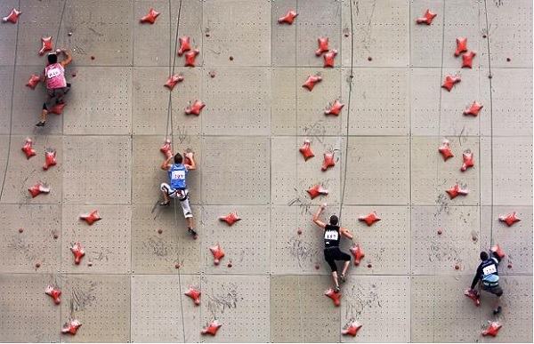
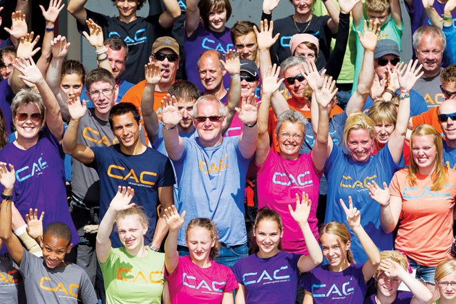

Competitive climbing is an indoor competitive sport where the players need to climb the artificial walls. There are three different categories in this sport which are lead, speed and bouldering. The rules and strategies vary based on the sport type. With a wide popularity worldwide, this game was also considered to be included in Olympic games in 2013.
History of Competitive Climbing

Competitive climbing was initially originated at Soviet Union where the sport was mostly focused on speed climbing. In 1985, a group of best climbers gathered at Bardonecchia, Italy in an event called SportRoccia and it was the first lead climbing competition. In 1986, the French Federation organized the first indoor competitive climbing event at Vaulx-en-Velin, Lyon. Slowly the sport started getting worldwide recognition and in 1988, the first Competitive Climbing World Series was organized. In 1989, the first Competitive Climbing World Cup in Lead and Speed was organized. Around the 1990s, many large events in countries like Europe, Japan and US were organized and the competitions started using artificial walls in order to avoid negative environmental impact. In 1991, the first world championship was held in Frankfurt, Germany. In 1998, Bouldering was introduced as another competitive climbing discipline and in 1999, the first Bouldering World Cup was held. In January, 2007, 45 country federations together found the International Federation of Sport Climbing (IFSC).
Participating Countries

Both as a recreational activity and as a competitive sport, competitive climbing is presently one of the popular sports. Today more than 75 countries actively participate in different worldwide competitive climbing events which include popular events like World Championship and the Youth Championship.